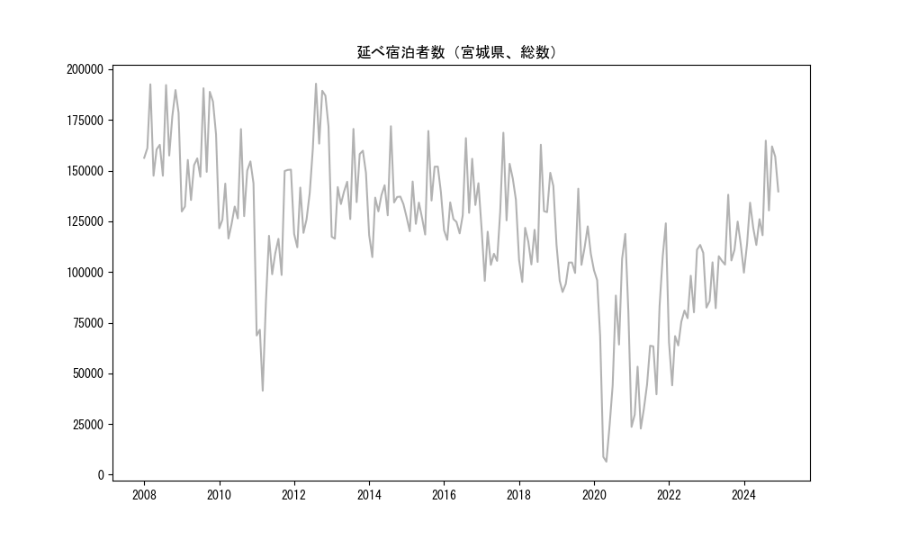
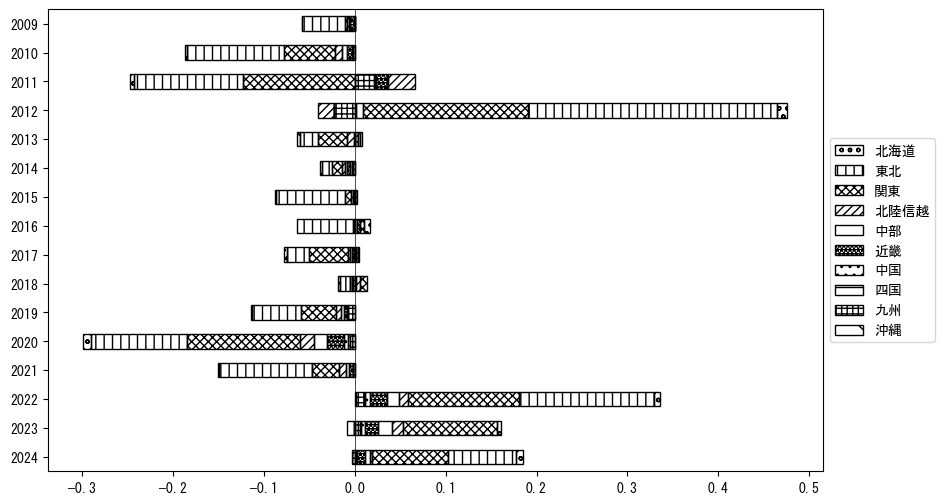
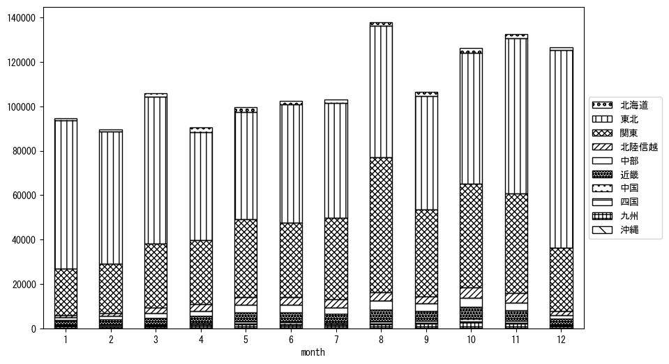

-
トップ
-
宮城県
宮城県
１．延べ宿泊者（総数）の推移
時系列グラフ

図１：宮城県内の従業員数100人以上の宿泊施設での延べ宿泊者数（国外、居住地不詳を含む総数）。
基本統計量
表１：従業員数100人以上の宿泊施設での延べ宿泊者の総数（国外、および居住地不詳を含む）に関する基本統計量。単位は人泊。平均は１か月あたりの平均値を表す。図１に対応。
| 2008年 |
168,550 |
16,699 |
147,461 (7月) |
192,556 (3月) |
| 2009年 |
157,438 |
21,295 |
129,828 (1月) |
190,614 (8月) |
| 2010年 |
136,314 |
16,157 |
116,492 (4月) |
170,482 (8月) |
| 2011年 |
104,838 |
34,898 |
41,443 (3月) |
150,449 (12月) |
| 2012年 |
151,793 |
29,530 |
112,161 (2月) |
192,852 (8月) |
| 2013年 |
140,929 |
16,741 |
116,398 (2月) |
170,557 (8月) |
| 2014年 |
134,540 |
15,269 |
107,327 (2月) |
171,879 (8月) |
| 2015年 |
136,905 |
15,362 |
118,467 (7月) |
169,549 (8月) |
| 2016年 |
133,025 |
15,168 |
115,819 (2月) |
166,019 (8月) |
| 2017年 |
126,113 |
21,904 |
95,614 (2月) |
168,669 (8月) |
| 2018年 |
123,391 |
20,358 |
95,079 (2月) |
162,760 (8月) |
| 2019年 |
107,500 |
13,901 |
90,121 (3月) |
141,069 (8月) |
| 2020年 |
67,220 |
38,468 |
6,427 (5月) |
118,760 (11月) |
| 2021年 |
57,295 |
32,940 |
22,777 (4月) |
123,978 (12月) |
| 2022年 |
82,268 |
21,608 |
44,083 (2月) |
113,339 (11月) |
| 2023年 |
105,422 |
16,555 |
82,126 (4月) |
138,096 (8月) |
| 2024年 |
131,724 |
20,688 |
99,672 (1月) |
164,764 (8月) |
２．宿泊者数の重心（年平均の推移）
図２：宮城県内の従業員数100人以上の宿泊施設での延べ宿泊者数（国外、居住地不詳を除く）の重心（年平均の推移）。
全画面表示
重心の前年平均からの移動距離と方位、および緯度・経度
表２：重心の前年平均からの移動距離と方位、および緯度・経度。図２に対応。
| 2008年 |
— |
— |
37.3833 |
140.0157 |
| 2009年 |
東北東 |
1.0km |
37.3874 |
140.0256 |
| 2010年 |
南 |
1.3km |
37.3756 |
140.0257 |
| 2011年 |
西南西 |
38.2km |
37.2373 |
139.6311 |
| 2012年 |
東北東 |
34.5km |
37.3843 |
139.9742 |
| 2013年 |
西南西 |
6.5km |
37.3615 |
139.9066 |
| 2014年 |
北東 |
6.1km |
37.3969 |
139.9596 |
| 2015年 |
南西 |
11.6km |
37.3149 |
139.8789 |
| 2016年 |
南西 |
9.1km |
37.2653 |
139.7977 |
| 2017年 |
北西 |
4.0km |
37.2935 |
139.7703 |
| 2018年 |
南 |
2.2km |
37.2736 |
139.7746 |
| 2019年 |
北東 |
6.8km |
37.3129 |
139.8341 |
| 2020年 |
北東 |
26.3km |
37.4559 |
140.0715 |
| 2021年 |
南南西 |
8.6km |
37.3815 |
140.0459 |
| 2022年 |
西南西 |
14.4km |
37.3242 |
139.8998 |
| 2023年 |
南西 |
31.6km |
37.1203 |
139.6510 |
| 2024年 |
東 |
3.8km |
37.1253 |
139.6930 |
運輸局別延べ宿泊者数
時系列（年平均）
図３：宮城県内の従業員数100人以上の宿泊施設での１か月あたり平均延べ宿泊者数（国外、居住地不詳を除く）の運輸局別内訳。
寄与度（前年からの変化率に対する）

図４：宮城県内の従業員数100人以上の宿泊施設での運輸局別延べ宿泊者数（国外、居住地不詳を除く）から求めた寄与度。
３．宿泊者数の重心（月別）
図５：宮城県内の従業員数100人以上の宿泊施設での延べ宿泊者数（国外、居住地不詳を除く）の重心（月別）。観測期間は2008年1月から2024年12月まで。
全画面表示
全期間（2008年1月～2024年12月）の平均と月別平均の比較
表３：全期間の平均から月別平均までの移動距離と方位、および緯度・経度。図５に対応。
| 全期間 |
— |
— |
37.3173 |
139.8797 |
| 1月 |
北東 |
47.5km |
37.6582 |
140.2040 |
| 2月 |
北東 |
37.1km |
37.5822 |
140.1348 |
| 3月 |
北東 |
27.8km |
37.5210 |
140.0618 |
| 4月 |
西南西 |
5.7km |
37.3043 |
139.8172 |
| 5月 |
南西 |
18.9km |
37.2048 |
139.7205 |
| 6月 |
西南西 |
11.6km |
37.2657 |
139.7657 |
| 7月 |
南南西 |
14.0km |
37.2119 |
139.7932 |
| 8月 |
南南西 |
40.4km |
36.9713 |
139.7375 |
| 9月 |
南西 |
26.9km |
37.1393 |
139.6733 |
| 10月 |
南西 |
36.0km |
37.0721 |
139.6137 |
| 11月 |
南西 |
10.8km |
37.2374 |
139.8107 |
| 12月 |
北東 |
47.0km |
37.6392 |
140.2244 |
運輸局別延べ宿泊者数
月別平均（2008年1月～2024年12月）

図６：宮城県内の従業員数100人以上の宿泊施設での延べ宿泊者数（国外、居住地不詳を除く）の運輸局別内訳（月別）。
寄与度（全期間の平均から月別平均への変化率に対する）
図７：宮城県内の従業員数100人以上の宿泊施設での運輸局別延べ宿泊者数（国外、居住地不詳を除く）から求めた寄与度（月別）。
４．データのダウンロード
出典：観光庁「宿泊旅行統計調査」に収録された「施設所在地、居住地別延べ宿泊者数（従業員数100人以上の施設）」
国土地理院「白地図（地理院タイル）」（図２と図５）